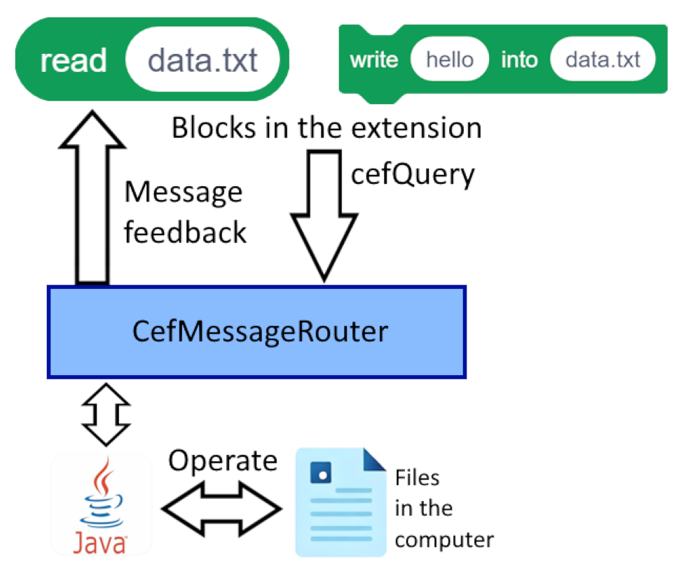
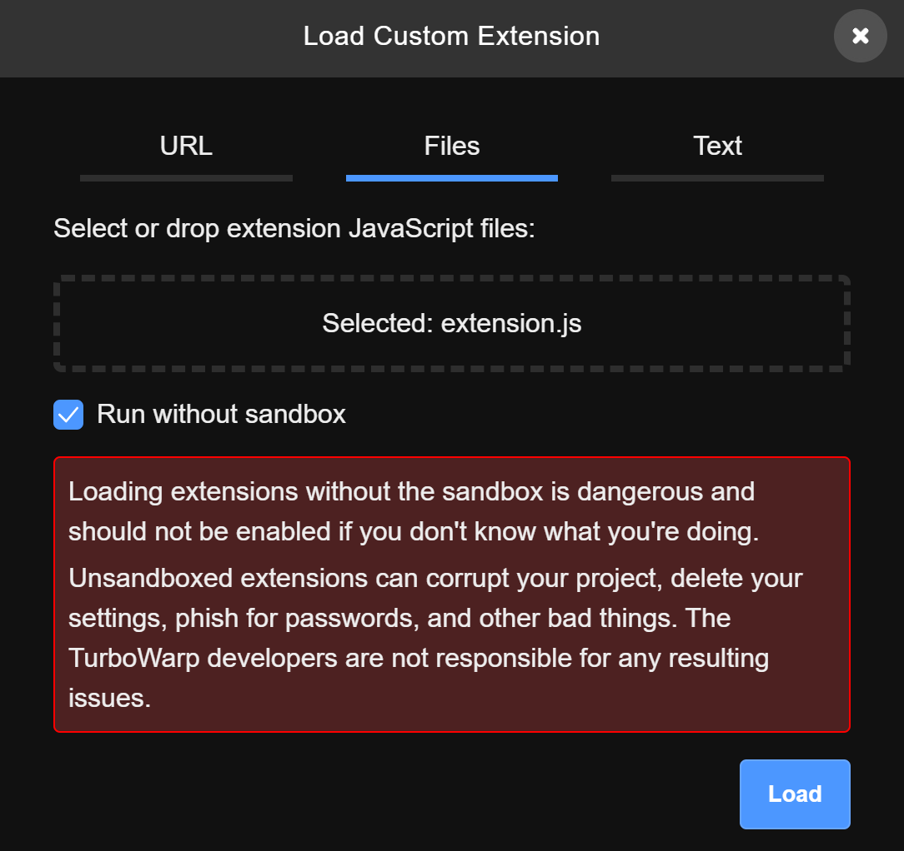

Java-js Bridge: Local File Access for TurboWarp Projects via JCEF
Abstract
TurboWarp compiles Scratch projects into JavaScript and runs them inside a browser sandbox, which blocks direct access to the host filesystem. This paper describes Java-js Bridge, a desktop host built on the Java Chromium Embedded Framework (JCEF). It registers a message router that injects a JS↔Java bridge (window.cefQuery) into the embedded page, and exposes eight file-operation blocks to TurboWarp projects through an unsandboxed custom extension. The design, protocol, implementation and usage of the system are presented. The window layer is also documented: command-line sizing, fullscreen without a decorated frame, and the measured limits of off-screen resizing that led to a fixed-size window policy.
1. Introduction
TurboWarp is an accelerated compiler for Scratch projects [4]. A compiled project behaves like a web page: it runs inside a sandbox, and web security rules deliberately prevent a page from silently reading arbitrary files on the host machine. Two ordinary approaches are unusable here:
fetch("file://...")is blocked by browsers.- The File System Access API requires a user gesture and a file-picker dialog for every single file, which is impractical for projects that need to auto-load whole folders of textures, sound banks or save data.
Consequently, a locally packaged TurboWarp project has no reliable way to touch the files next to it. The goal of this work is to restore that capability in a controlled manner.
2. Architecture
The system replaces the browser itself. JCEF is the Java port of the Chromium Embedded Framework [3], embedding a full Chromium browser inside a Swing application. The host registers a message router (CefMessageRouter) that injects the JS↔Java bridge window.cefQuery into every page of the embedded browser [1]. A custom, unsandboxed TurboWarp extension exposes this bridge to Scratch in the form of blocks.
The bridge chain is: Scratch block → extension.js → window.cefQuery → CefMessageRouter → FileMessageRouterHandler (Java) → local file. The overall architecture is shown in Figure 1.

3. Bridge Protocol
All communication between the page and the Java host is JSON transported over window.cefQuery. A request carries an action, a path and optional data; the host answers with a status flag and either the result or an error message, as shown below.
// Request (from the page to Java)
{ "action": "readFile", "path": "data.txt", "data": "hello" }
// Response (from Java back to the page)
{ "ok": true, "data": "file content..." } // success
{ "ok": false, "error": "message" } // failureEight file actions are supported (Table 1). Two further actions are internal and are issued by the host's own load handler rather than by project blocks: __setWindowIcon (a base64 PNG produced by rasterising the page favicon on a <canvas> with the alpha channel preserved) and __setContentSize (the pixel size of the largest canvas, used for one-shot window sizing).
| Action | Purpose | data (response) |
|---|---|---|
readFile | Read a file | file content (UTF-8) |
writeFile | Overwrite a file | empty |
appendFile | Append to a file | empty |
listDir | List directory entries | JSON array string |
exists | Check path existence | "true" / "false" |
deleteFile | Delete file or empty dir | empty |
makeDir | Create directories recursively | empty |
fileSize | File size in bytes | number string |
Table 1. The eight file actions implemented on the Java side.
4. Implementation
The system consists of five components, described below.
4.1 Host Application (Main.java)
- Initializes
CefAppvia jcefmaven'sCefAppBuilderwith install directoryjcef-bundle; native libraries ship as Gradle dependencies, so no runtime download is required. - Keeps the GPU enabled —
--disable-gpumust stay commented out because TurboWarp projects rely on WebGL hardware acceleration. - Enables off-screen rendering (
windowless_rendering_enabled = true) so the browser embeds cleanly into a Swing window. - Pins the AWT user scale to 1:1 by setting
sun.java2d.uiScale=1.0before any AWT class is loaded. At 185% system scaling an unscaled request for a 1400 px window produced a 2590 px physical surface, which the off-screen buffer does not follow; with the scale pinned the same request yields an exact 1400 px window. - Parses named command-line flags (Section 5.1) in any order, resolves the window size from the flags or from the HTML itself (Section 4.5), and opens the window resizable-off (Section 4.6).
- Attaches the
CefMessageRouterwith the file handler to the client, loads the page fromfile:///, and mirrors the page title into the window viaCefDisplayHandlerAdapter.onTitleChange. - Loads the project's favicon on a background thread and sets it as the frame icon; on window close,
browser.close(true)andcefApp.dispose()release all native resources. - Keeps a geometric self-check (
[GEOM] ui=WxH osr=WxH match=bool) that reads the renderer's privatebrowser_rect_by reflection and compares it with the Swing component size; it was used to rule the layout out as a cause of the artefact described in Section 4.6.
4.2 Message Router Handler (FileMessageRouterHandler.java)
- Extends
CefMessageRouterHandlerAdapter;onQueryparses the JSON request and dispatches by action. - All operations use
java.nio.file(Files.readAllBytes,Files.write,Files.createDirectories,Files.list,Files.deleteIfExists,Files.size). - Requests are executed on a 4-thread executor so the CEF UI thread is never blocked;
CefQueryCallback.successis thread-safe. - Errors are caught and returned as
{"ok":false,"error":...}instead of crashing the page. - Carries two host-side callbacks for the internal actions of Section 3: an icon consumer and a content-size consumer.
4.3 TurboWarp Extension (extension.js)
- Requires the extension sandbox to be disabled: it throws
"Run it unsandbox!!"otherwise, because only unsandboxed extensions may touchwindow.cefQuery. callJava(payload)wrapswindow.cefQueryinto a Promise;exec(action, path, data)builds the payload, checksokand returnsdata.- Exposes the green Local File category with eight blocks, detailed in Section 5.4.
4.4 Favicon Loading (FaviconLoader.java)
- Scans the HTML for
<link rel="...">icons with priority apple-touch-icon > shortcut icon > icon. - Handles relative/absolute file paths, http(s) URLs and
data:URIs; decodes PNG/JPEG/GIF/BMP and ICO files with embedded PNGs (SVG is skipped). - Enforces a 2 MB limit; any failure silently returns
null. - Transparency is preserved end to end: the Java pre-reader never flattens onto a background, and the JavaScript fallback draws the icon onto a fresh
<canvas>without filling it first, so SVG and exotic formats keep their alpha channel.
4.5 Window Sizing and Fullscreen
Window size is decided once, at launch, from four sources in decreasing priority: explicit -x/-y flags, a static probe of the HTML file, a dynamic probe of the live page, and finally the defaults (1280×800).
- Static probe. The HTML is read as text and three patterns are tried in order: a
viewportdeclaration carrying pixel values, a<canvas width="..." height="...">tag, and an inlinewidth/heightstyle in px on<html>or<body>. TurboWarp output typically declares onlywidth=device-width, so this stage frequently returns nothing. - Dynamic probe. After
onLoadEndthe host injects a script that picks the largest canvas by bounding-box area and reports its pixel size through__setContentSize; the window is resized once. If the reported size is withinmax(64, size/8)of the current window on both axes, the page is considered fluid and the report is ignored — this prevents a responsive project from collapsing the window to its canvas size. - Fullscreen. Fullscreen is requested with the
-fullscreenflag (alias-f) and implemented as an undecorated window whose bounds equal the screen bounds:setUndecorated(true)plussetBounds(screenBounds). NeithersetFullScreenWindownorsetAlwaysOnTopis called, so the window keeps normal Z-order and can be covered or left with Alt+Tab. On a 2560×1440 host the result is measured as2560x1440 at 0,0, caption=false, topmost=false. - No decorations, no scrollbars. The browser component is placed in the
CENTERof aBorderLayout; the page itself is asked to reflow, and noJScrollPaneis used, so the document follows the viewport instead of being clipped.
4.6 The Resize Boundary of Off-Screen Rendering
The host initially allowed free resizing. That produced a reproducible artefact: after a series of resizes, the part of the window beyond the previous frame turns black, and the window then stops repainting and stops answering mouse events (window focus events still arrive). The effect is cumulative — a single resize is harmless, while the same size reached after many resizes is not.
Measurements were taken on a 2560×1440 host at 185% scaling by capturing the window rectangle and sampling a grid of pixels, classifying them as black (all channels < 40), white (> 240) or content. The share of black area depends on the target size and on how many resizes preceded it (Table 2).
| Step | Requested size | Black area | White area | Content |
|---|---|---|---|---|
| #01 | 800×600 | 2.6% | 83.4% | 13.9% |
| #02 | 1200×800 | 18.9% | 71.5% | 9.6% |
| #04 | 1600×1000 | 50.9% | 43.7% | 5.4% |
| #08 | 1800×1100 | 59.2% | 35.9% | 4.9% |
| #14 | 1700×1050 | 55.3% | 39.5% | 5.2% |
| #10 | 500×400 | 4.2% | 76.7% | 19.1% |
| #15 | 1024×768 | 2.9% | 87.5% | 9.6% |
Table 2. Black area after successive resizes of one process. A fresh process launched directly at 1800×1100 renders correctly, so the defect is cumulative rather than size-dependent.
Three observations narrow the cause down:
[GEOM]reportedmatch=truein all fifteen rounds — the Swing component size and the renderer'sbrowser_rect_were identical every time, so the layout and the reported viewport are not out of sync.CefRenderercarriesview_width_/view_height_and rebuilds its texture withglTexImage2Dwhenever those change, so a correctly delivered frame of a new size would be uploadable.- When the window is stuck, the painted content sits in the bottom-left corner instead of the top-left, and the rest of the window shows the GL clear colour. That is a viewport/projection-state error on the GL side, not missing content: the frame is being drawn with the wrong origin and the wrong extent.
As a partial mitigation the host re-notifies Chromium of the viewport after every resize by reflectively invoking CefBrowser_N.wasResized(w, h) at 150, 500 and 1200 ms. With this in place the first ten rounds fell to 0.3–4.6% black, but large sizes late in the sequence still reached 45–56%, so the artefact is reduced rather than eliminated.
The adopted policy is therefore to remove the trigger: the window is opened with setResizable(false) and the size is fixed at launch. On Windows the window style then reads 0x16CA0000 with neither WS_THICKFRAME nor WS_MAXIMIZEBOX set, so the border cannot be dragged and the maximise button is disabled. Changing the size means relaunching with different flags, which always starts from a clean first frame. A size injected externally through SetWindowPos can still resize the window and will reproduce the artefact; that path is outside the application's own interaction.
5. Usage
5.1 Setup
Important — launch with the JVM flags below. The host renders off-screen through JOGL, which needs access to internal AWT packages of the JDK. Without these flags, startup fails with com.jogamp.opengl.GLException: Unable to determine GraphicsConfiguration. The same flags work on every platform (run.bat for Windows and run.sh for Linux/macOS are provided in the downloads section):
java \
--add-exports java.base/java.lang=ALL-UNNAMED \
--add-exports java.desktop/sun.awt=ALL-UNNAMED \
--add-exports java.desktop/sun.java2d=ALL-UNNAMED \
--add-opens java.desktop/sun.awt=ALL-UNNAMED \
-jar Java-js_Bridge-1.0-all.jar [options]Options are named, order-independent, and accept either -flag value or -flag=value (Table 3). Positional forms (1024 768 Project.html, or a bare full) are still accepted for compatibility.
| Flag | Meaning | Default |
|---|---|---|
-x, -width | Window width in pixels; accepts -x=1000 | probe of the HTML, else 1280 |
-y, -height | Window height in pixels; accepts -y=700 | probe of the HTML, else 800 |
-html, -file | HTML file to open, relative to the working directory | Project.html |
-fullscreen, -full, -f | Undecorated window covering the whole screen, normal Z-order | off (windowed) |
Table 3. Command-line options. Unknown flags and non-positive sizes abort with exit code 2 and print the usage line.
java -jar Java-js_Bridge-1.0-all.jar -html Project.html
java -jar Java-js_Bridge-1.0-all.jar -x 1024 -y 768 -html Project.html
java -jar Java-js_Bridge-1.0-all.jar -html Project.html -y 700 -x 1000 rem any order
java -jar Java-js_Bridge-1.0-all.jar -f -html Project.html- Place the HTML (the TurboWarp packager output) next to the application and start it. A Swing window opens with the project inside an embedded Chromium; the window size is the one you asked for and cannot be changed afterwards.
- In the project, load the Local File extension in unsandboxed mode — it refuses to start otherwise.
- Build blocks from the Local File palette.
Figure 2 shows the extension being loaded in the editor, and Figure 3 shows the running application window.


5.2 Resizing Policy
The window is deliberately not resizable (Section 4.6). The document is not clipped and no scrollbars are added: the browser occupies the whole content pane and the page reflows to it, so a project laid out with percentage sizes fills the window, while a fixed-size stage stays centred and keeps its proportions. To work at another size, relaunch with different -x/-y values.
5.3 Example
A minimal auto-save routine combining the blocks below:
when green flag clicked
if <exists [save.txt]> then
set [content v] to (read [save.txt]) // reporter -> file text
say (content)
else
write [hello] into [save.txt] // command, awaits completion
endReporter and boolean blocks return their value directly to Scratch; command blocks finish asynchronously and the next block runs after the operation completes. This is sufficient to build auto-save, level editors, asset loaders or text-based games that read and write real files on disk.
5.4 Block Reference
Each block is presented in its own subsection, with a demonstration shown as a short animation.
read [PATH]
Reporter
Reads a file and returns its content as a UTF-8 string. Suitable for loading text assets, configuration files or save data.

read block.write [DATA] into [PATH]
Command
Overwrites a file with the given data, creating parent directories as needed.

write block.append [DATA] to [PATH]
Command
Appends text to a file, creating it if it does not exist.

append block.list directory [PATH]
Reporter
Lists the entries of a directory as a JSON array string, each item carrying name, isDir and size.

list directory block.exists [PATH]
Boolean
Reports whether the given path exists.

exists block.delete [PATH]
Command
Deletes a file or an empty directory.

delete block.make directory [PATH]
Command
Recursively creates directories.

make directory block.file size of [PATH]
Reporter
Returns the file size in bytes, or 0 on failure.

file size block.6. Security Considerations
- The unsandboxed extension runs with the same permissions as the current user. A historical TurboWarp Desktop bug (CVE-2023-40168 [6]) allowed a malicious project to exfiltrate arbitrary files, so this bridge should only be enabled for trusted projects.
- For untrusted projects, set
ROOT_LIMITinFileMessageRouterHandlerto an allow-listed directory; paths are normalized and prefix-checked, blocking../traversal. - Never load unknown projects or unknown extensions into this application.
7. Availability & Downloads
The release Java-js_Bridge-1.0-all provides two assets: a runnable fat jar, and a zip archive that contains the jar plus the complete jcef-bundle folder (Chromium native libraries), enabling an offline, out-of-the-box setup. Cross-platform launcher scripts are available below — remember that the JVM flags in Section 5.1 are required on every platform. The launchers forward their own arguments to the jar, so the options of Table 3 can be passed straight through.
The six files behind this build — Main.java, FileMessageRouterHandler.java, FaviconLoader.java, extension.js and the two Gradle scripts — can be read in the Source code section. The Source code archives on the release page are auto-generated by GitHub and contain the raw repository files — use the assets above instead.
References
- Chromium Embedded Framework — JavaScript Integration. https://chromiumembedded.github.io/cef/javascript_integration.html
- Chromium Embedded Framework — Hands-On Tutorial (custom schemes and message routing). https://chromiumembedded.github.io/cef/hands_on_tutorial.html
- Java Chromium Embedded Framework (JCEF). https://chromiumembedded.github.io/java-cef/
- TurboWarp Desktop. https://desktop.turbowarp.org/
- TurboWarp Extension Gallery. https://extensions.turbowarp.org/
- NVD — CVE-2023-40168 (TurboWarp Desktop arbitrary file read). https://nvd.nist.gov/vuln/detail/CVE-2023-40168
- JetBrains — Embedded Browser (JCEF). https://plugins.jetbrains.com/docs/intellij/embedded-browser-jcef.html